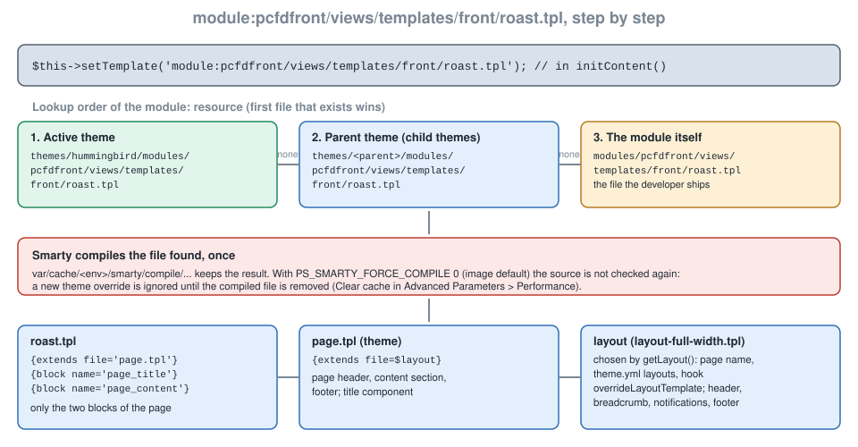

Front Controllers and Templates
|
This content was generated with the assistance of AI and should be verified against the official documentation before being relied on in production. |
This page was written against PrestaShop 9.2.0 (released on 2026-09-30) and checked on 2026-10-27. Everything shown ran on the official Docker image prestashop/prestashop:9.2.0 (PHP 8.5.12, MySQL 8.4, Smarty 4.5.7) with Hummingbird 2.1.2 as the active theme, in developer mode and with friendly URLs and the CCC asset combination turned on, which is how the image installs the shop. The front controller mechanism is the one PrestaShop has used since 1.5 and is unchanged in 9; the places where older documentation or older stores differ are in Version notes. PrestaShop is open source software, so no plan or edition changes anything on this page.
A hook can put a block into a page the theme already has, but a module that needs a page of its own (a calendar, a quote form, a payment confirmation, an AJAX endpoint) needs a front controller: a class that PrestaShop finds by name, runs inside the same lifecycle as the core controllers, and renders into the theme’s layout. Writing one involves four things that this page treats in turn: the class and its lifecycle, the URLs that reach it, the template it renders, and the way a theme replaces that template. It follows the page on services and admin controllers, which is the back-office counterpart, and it uses the settings of module configuration and the hooks of the hooks page.
The running example is the public Pocket Coffee roast calendar: the page /roast-calendar lists the next roasting days and lets a visitor type the batch code printed on a bag to see when it was roasted. A second page, club, is reserved for signed-in Coffee Club members. The module is called pcfdfront.
What was run and what was not
The module was installed with bin/console prestashop:module install pcfdfront. The pages were requested over HTTP with and without a cookie jar: the page in English and in Spanish, through the three URL forms, with valid and invalid form posts, as an AJAX request with the Accept header and with the ajax parameter, and the Coffee Club page as a guest. A theme override of the page template was added to and removed from the Hummingbird theme folder to measure the lookup order, the compile cache and the effect of an empty override. php -l, PHP CS Fixer with the PrestaShop standard and the assets of the combined CSS and JavaScript files were checked.
Not run: signed-in customer sessions (no customer account was created, so the Coffee Club page was only checked as a guest), the $ssl option and HTTPS redirections (the test shop runs on plain HTTP), friendly URLs turned off, a child theme, moduleRoutes with URL keywords, CCC turned off, and the experimental Twig front kernel. The Smarty templates were checked by the markup the server returned; no browser was used.
A front controller in outline
A module front controller follows three rules:
-
the file is in
controllers/front/of the module; -
the class is named
<ModuleClassName><FileName>ModuleFrontControllerin CamelCase: the modulepcfdfronthas the classPcfdfront, the fileroast.phpgivesPcfdfrontRoastModuleFrontController; -
the class extends
ModuleFrontController, which extendsFrontControllerandController.
Nothing else registers it: PrestaShop finds the file when a request names the module and the controller. $this->module is the instance of the module and $this->context is the current Context (customer, cart, language, currency, shop, link, smarty). The controller below is the whole page.
<?php
declare(strict_types=1);
/**
* The class name is <ModuleClassName><FileName>ModuleFrontController: Pcfdfront + Roast.
* The file is controllers/front/roast.php, reachable at
* index.php?fc=module&module=pcfdfront&controller=roast
*
* @property Pcfdfront $module
*/
class PcfdfrontRoastModuleFrontController extends ModuleFrontController
{
/** Anybody can open the page: no redirect to the login page. */
public $auth = false;
/** Name used for the layout lookup and the body class. */
public $page_name = 'module-pcfdfront-roast';
private string $batch = '';
public function init(): void
{
parent::init();
$this->batch = strtoupper(trim((string) Tools::getValue('batch')));
}
/**
* Runs after init() and before initContent(); form submissions are processed here.
*/
public function postProcess(): void
{
if (!Tools::isSubmit('submitBatch')) {
return;
}
// static token of the visitor, rendered in the form as {$static_token}
if (Tools::getValue('token') !== Tools::getToken(false)) {
$this->errors[] = $this->trans('Your session expired, please try again.', [], 'Modules.Pcfdfront.Shop');
return;
}
if (!preg_match('/^PC-[A-Z]{3}-\d{3}$/', $this->batch)) {
$this->errors[] = $this->trans('Batch codes look like PC-ETH-001.', [], 'Modules.Pcfdfront.Shop');
return;
}
[$knownBatch, $roastDate] = array_pad(explode(' ', (string) Configuration::get(Pcfdfront::KEY_LAST_BATCH), 2), 2, '');
if ($this->batch !== $knownBatch) {
$this->errors[] = $this->trans('We could not find this batch.', [], 'Modules.Pcfdfront.Shop');
return;
}
// The result survives the redirect (POST/redirect/GET) through the notification mechanism.
$this->success[] = $this->trans('Batch %batch% was roasted on %date%.', ['%batch%' => $this->batch, '%date%' => $roastDate], 'Modules.Pcfdfront.Shop');
$this->redirectWithNotifications($this->context->link->getModuleLink($this->module->name, 'roast'));
}
public function initContent(): void
{
parent::initContent();
$this->context->smarty->assign([
'pcfdfront_next' => $this->nextRoasts(4),
'pcfdfront_batch' => $this->batch,
'pcfdfront_next_url' => $this->context->link->getModuleLink($this->module->name, 'roast', ['ajax' => 1, 'action' => 'next']),
]);
$this->setTemplate('module:pcfdfront/views/templates/front/roast.tpl');
}
/**
* Called instead of display() when the request is AJAX and has action=next.
*/
public function displayAjaxNext(): void
{
header('Content-Type: application/json; charset=utf-8');
$this->ajaxRender((string) json_encode(['next' => $this->nextRoasts(3)]));
}
/**
* @return string[]
*/
private function nextRoasts(int $count): array
{
$weekday = max(1, min(7, (int) Configuration::get(Pcfdfront::KEY_WEEKDAY)));
$day = new DateTimeImmutable('today');
$day = $day->modify('+' . (($weekday - (int) $day->format('N') + 7) % 7) . ' days');
$dates = [];
for ($i = 0; $i < $count; ++$i) {
$dates[] = $day->modify('+' . (7 * $i) . ' days')->format('Y-m-d');
}
return $dates;
}
protected function getBreadcrumbLinks(): array
{
$breadcrumb = parent::getBreadcrumbLinks();
$breadcrumb['links'][] = [
'title' => $this->trans('Roast calendar', [], 'Modules.Pcfdfront.Shop'),
'url' => $this->context->link->getModuleLink($this->module->name, 'roast'),
];
return $breadcrumb;
}
public function getTemplateVarPage(): array
{
$page = parent::getTemplateVarPage();
$page['meta']['title'] = $this->trans('Roast calendar', [], 'Modules.Pcfdfront.Shop');
$page['meta']['description'] = $this->trans('When Pocket Coffee roasts its beans, and how to check the roast date of your bag.', [], 'Modules.Pcfdfront.Shop');
return $page;
}
}The lifecycle
Controller::run() calls the steps below in this order. Overriding the right one is most of the skill.
| Method | What it is for |
|---|---|
|
Sets the properties. Rarely overridden. |
|
Core setup: runs the hooks |
|
Return |
|
Register stylesheets and scripts. It runs before |
|
Process input. Nothing is rendered yet, so this is where to validate, change data, add messages and redirect. |
|
Assign Smarty variables and choose the template with |
|
Renders the template through the layout. Rarely overridden. |
|
The AJAX answer; see below. |
The base class has more hooks: action<ControllerName>SetVariablesBefore and actionFrontControllerSetVariablesBefore run while the shared variables are built and let another module add variables.
Properties that change the behaviour
| Property | Default | Effect |
|---|---|---|
|
|
When |
|
|
Whether a guest-checkout customer counts as signed in for |
|
|
Forces HTTPS for the page when the shop has SSL enabled. When the shop setting |
|
empty |
The page name; used for the body id and class and for the layout lookup. For a module controller without it the dispatcher’s controller name is used. |
|
empty |
The core controllers' page name; it takes precedence over the dispatcher’s name in the layout lookup. |
|
|
Protected. Set |
|
false / true / true |
Render without header and footer; set to false automatically for AJAX requests. |
|
empty arrays |
Messages shown in the notification area of the theme. |
|
from the request |
True when the request has |
The Coffee Club page uses $auth:
<?php
declare(strict_types=1);
/**
* Coffee Club page: only for signed-in customers.
*
* @property Pcfdfront $module
*/
class PcfdfrontClubModuleFrontController extends ModuleFrontController
{
/** Guests are redirected to the login page. */
public $auth = true;
/** Guest checkout accounts do not count as signed in for this page. */
public $guestAllowed = false;
public function initContent(): void
{
parent::initContent();
$this->context->smarty->assign('pcfdfront_firstname', $this->context->customer->firstname);
$this->setTemplate('module:pcfdfront/views/templates/front/club.tpl');
}
}A request for /module/pcfdfront/club without a session answered 302 with Location: http://localhost:8080/login.
URLs
getModuleLink
A module controller is reached with Link::getModuleLink($module, $controller = 'default', array $params = [], $ssl = null, $idLang = null, $idShop = null, $relativeProtocol = false). The language and the shop default to the current ones, and the method chooses HTTP or HTTPS and the URL style by itself. Calls measured on the test shop (friendly URLs on, English and Spanish active):
| Call | Result |
|---|---|
|
|
|
|
|
|
|
|
|
|
|
Without friendly URLs the same controller is reached as index.php?fc=module&module=pcfdfront&controller=roast (with &id_lang= for another language); that form worked on the test shop as well. Never write such URLs by hand: getModuleLink() is what keeps the page reachable when the merchant switches friendly URLs, languages or HTTPS on or off. In a template, {$link->getModuleLink('pcfdfront', 'roast')} does the same, and so does the core’s {url entity='module' name='pcfdfront' controller='roast' params=['ajax' => 1]} helper, which returned http://localhost:8080/roast-calendar?ajax=1.
Friendly URLs with moduleRoutes
A module chooses its own friendly URL by answering the hook moduleRoutes with a list of routes. The route key must be module-<module>-<controller>: getModuleLink() looks for exactly that name to decide whether the module has a route of its own.
<?php
/**
* Pocket Coffee: public roast calendar page (module front controller).
*/
declare(strict_types=1);
if (!defined('_PS_VERSION_')) {
exit;
}
class Pcfdfront extends Module
{
public const KEY_WEEKDAY = 'PCFDFRONT_ROAST_WEEKDAY';
public const KEY_LAST_BATCH = 'PCFDFRONT_LAST_BATCH';
public function __construct()
{
$this->name = 'pcfdfront';
$this->tab = 'front_office_features';
$this->version = '1.0.0';
$this->author = 'Pocket Coffee';
$this->need_instance = 0;
$this->ps_versions_compliancy = ['min' => '9.0.0', 'max' => '9.99.99'];
parent::__construct();
$this->displayName = $this->trans('Pocket Coffee roast calendar page', [], 'Modules.Pcfdfront.Admin');
$this->description = $this->trans('A public page with the next roasting days and a batch code lookup.', [], 'Modules.Pcfdfront.Admin');
}
public function isUsingNewTranslationSystem(): bool
{
return true;
}
public function install(): bool
{
return parent::install()
&& $this->registerHook('moduleRoutes')
&& $this->registerHook('actionFrontControllerSetMedia')
&& Configuration::updateGlobalValue(self::KEY_WEEKDAY, 1)
&& Configuration::updateGlobalValue(self::KEY_LAST_BATCH, 'PC-ETH-001 2026-10-26');
}
public function uninstall(): bool
{
return Configuration::deleteByName(self::KEY_WEEKDAY)
&& Configuration::deleteByName(self::KEY_LAST_BATCH)
&& parent::uninstall();
}
/**
* Friendly URL: /roast-calendar instead of /module/pcfdfront/roast.
*
* @return array<string, array<string, mixed>>
*/
public function hookModuleRoutes(array $params): array
{
return [
'module-pcfdfront-roast' => [
'controller' => 'roast',
'rule' => 'roast-calendar',
'keywords' => [],
'params' => [
'fc' => 'module',
'module' => 'pcfdfront',
],
],
];
}
/**
* Assets loaded on every front page; restrict them to the pages that need them.
*/
public function hookActionFrontControllerSetMedia(array $params): void
{
if ('module-pcfdfront-roast' !== $this->context->controller->php_self && 'module-pcfdfront-roast' !== ($this->context->controller->page_name ?? '')) {
return;
}
$this->context->controller->registerStylesheet(
'module-pcfdfront-roast',
'modules/' . $this->name . '/views/css/roast.css',
['media' => 'all', 'priority' => 200]
);
$this->context->controller->registerJavascript(
'module-pcfdfront-roast',
'modules/' . $this->name . '/views/js/roast.js',
['position' => 'bottom', 'priority' => 200]
);
}
}After installation /roast-calendar and /es/roast-calendar served the page, getModuleLink() returned the friendly URL, the alternate-language links of the page (alternative_langs) pointed at both, and the page also stayed reachable at /en/module/pcfdfront/roast and at the index.php?fc=module form without a redirect to the friendly URL, so the same content has several addresses. Add a canonical link (the getCanonicalURL() method of the controller returns the URL used for it) to keep search engines on one.
Direct PHP files are not an option any more
Before PrestaShop 1.5 a module put a PHP file at its root and called it directly (modules/mymodule/validation.php). Since 9.0 this is forbidden: the modules/.htaccess file shipped with the shop denies .php, .log, .txt, .lock, .json, .yml, .yaml, .tpl, .twig, config.xml and config_*.xml requests, and the test shop answered 403 for .php, .json and .tpl files of a module. A module that still needs a script a payment provider or a cron job can call turns it into a front controller, as in the next section. The rules in .htaccess only work where the web server honours it; with Nginx the equivalent location rules have to be written by hand.
Forms, notifications and customer-only pages
A form that posts back to the controller follows the pattern of the example. The form carries a hidden token field with the visitor’s static token, which every front template has as $static_token (the same value as Tools::getToken(false)); postProcess() compares it with the posted value before doing anything else. The base class offers isTokenValid(), but it returns true whenever the merchant setting PS_TOKEN_ENABLE is off, so a module that wants CSRF protection regardless of that setting compares the tokens itself, as the example does.
Messages go into $this->errors, $this->warning, $this->success and $this->info; the theme prints them in the notification area. To avoid a repeated post when the visitor refreshes, a successful post redirects with redirectWithNotifications($url), which stores the four lists in the session (or in a cookie when no session can be started) and prints them once after the redirect. The test did exactly that:
| Post | Answer |
|---|---|
wrong |
HTTP 200, the form again with "Your session expired, please try again." |
|
HTTP 200, "Batch codes look like PC-ETH-001." |
|
HTTP 200, "We could not find this batch." |
|
HTTP 302 to |
The batch code is read from Tools::getValue('batch'), which returns false when the field is absent: always cast it and validate it, as the example does with a regular expression before using it. Everything that comes from the request and reaches a template has to be escaped there.
AJAX endpoints and cron targets
A request is treated as AJAX when it has an ajax parameter or when its Accept header contains application/json. For such a request init() switches the header and footer off and run() does not call display(); it calls displayAjax<Action>() when the request has an action parameter and the method exists (action=next calls displayAjaxNext()), and displayAjax() otherwise. postProcess() and initContent() still run before it, so keep expensive work out of initContent() or guard it with $this->ajax. ajaxRender($value) sends the answer after the hooks actionAjaxDie<Controller><Method>Before, with Cache-Control: no-store and X-Robots-Tag: noindex headers; set the Content-Type yourself.
Both ways of marking the request worked on the test shop: curl -H 'Accept: application/json' http://localhost:8080/roast-calendar?action=next and curl 'http://localhost:8080/roast-calendar?ajax=1&action=next' answered {"next":["2026-11-02","2026-11-09","2026-11-16"]} with Content-Type: application/json; charset=utf-8.
The script that reads the endpoint from the page and the stylesheet are small. They are registered by the hook actionFrontControllerSetMedia of the module class shown earlier:
document.addEventListener('DOMContentLoaded', () => {
const list = document.getElementById('pcfdfront-next');
if (!list) {
return;
}
// The Accept header marks the request as AJAX, so the controller answers with displayAjaxNext().
fetch(list.dataset.url, { headers: { Accept: 'application/json' } })
.then((response) => response.json())
.then((data) => {
list.setAttribute('data-count', String(data.next.length));
});
});.pcfdfront-roast ul { padding-left: 1.25rem; }registerStylesheet($id, $relativePath, $params) accepts media (default all), priority (default 50, lower first; the example uses 200 to come after the theme), inline, server (local or remote), version and needRtl; registerJavascript($id, $relativePath, $params) accepts position (bottom default or head), priority, inline, attributes, server and version. With the CCC option on (the default for new 9.x installs) the files are merged into the theme’s combined files; the markup contained one theme-<hash>.css and one bottom-<hash>.js and the module’s rules and script were found inside them, not as separate tags. Load assets only on the pages that need them, because the hook runs on every page.
A cron job or a payment provider’s callback should be a front controller as well, because the controller starts the shop context the same way a page does. The documented pattern makes the controller an AJAX one and refuses calls that do not come from the command line or that lack a secret; it was not run here:
<?php
class ExamplemoduleCronModuleFrontController extends ModuleFrontController
{
public $auth = false;
public $ajax;
public function display()
{
$this->ajax = 1;
if (!Tools::isPHPCLI()) {
$this->ajaxRender('Forbidden call.');
return;
}
// additional token checks, then the work
$this->ajaxRender("hello\n");
}
}Smarty templates
The front office of PrestaShop 9 renders with Smarty 4.5.7. The controller chooses a template with setTemplate(). A module template is written as module:<module>/views/templates/front/<name>.tpl; the module: prefix makes Smarty look first in the theme, then in the module (the next section). A template that is not prefixed is looked up in the theme’s templates/ folder instead, which is wrong for a module.
{extends file='page.tpl'}
{block name='page_title'}
{l s='Roast calendar' d='Modules.Pcfdfront.Shop'}
{/block}
{block name='page_content'}
<section class="pcfdfront-roast">
<h2 class="h4">{l s='Next roasting days' d='Modules.Pcfdfront.Shop'}</h2>
<ul id="pcfdfront-next" data-url="{$pcfdfront_next_url|escape:'html':'UTF-8'}">
{foreach $pcfdfront_next as $date}
<li>{$date|escape:'html':'UTF-8'}</li>
{/foreach}
</ul>
<h2 class="h4">{l s='Check your bag' d='Modules.Pcfdfront.Shop'}</h2>
<form method="post" action="{$link->getModuleLink('pcfdfront', 'roast')|escape:'html':'UTF-8'}">
<input type="hidden" name="token" value="{$static_token|escape:'html':'UTF-8'}">
<label class="form-label" for="pcfdfront-batch">{l s='Batch code printed on the bag' d='Modules.Pcfdfront.Shop'}</label>
<input class="form-control" id="pcfdfront-batch" name="batch" type="text" value="{$pcfdfront_batch|escape:'html':'UTF-8'}" placeholder="PC-ETH-001" required>
<button class="btn btn-primary mt-3" type="submit" name="submitBatch" value="1">{l s='Check' d='Modules.Pcfdfront.Shop'}</button>
</form>
</section>
{/block}{extends file='page.tpl'}
{block name='page_title'}
{l s='Coffee Club' d='Modules.Pcfdfront.Shop'}
{/block}
{block name='page_content'}
<p>{l s='Welcome back, %name%.' sprintf=['%name%' => $pcfdfront_firstname] d='Modules.Pcfdfront.Shop'}</p>
{/block}Source: PrestaShop devdocs: Displaying content on the front office and PrestaShop devdocs: Templates
What the templates use
-
{extends file='page.tpl'}puts the page inside the theme’s page template, which itself extends the layout. The blocks a child fills in Hummingbird arepage_title(its text is wrapped in the page title component),page_content_top,page_contentandpage_footer; the core themes use the same block names, which is why a module page looks right in any theme. -
{l s='text' d='Modules.Pcfdfront.Shop'}translates a string in the new translation system, with the domain afterd=; the old form{l s='text' mod='pcfdfront'}belongs to the classic system.sprintf=['%name%' => $value]replaces placeholders. The translations themselves are the subject of the page on module translations. -
The shared variables assigned by the base class:
$urls(all page URLs and image bases),$link(theLinkobject),$page(meta, body classes, page name),$customer,$cart,$language,$currency,$shop,$configuration,$breadcrumband$static_token. The complete list is in the theme template-variable reference. -
Escaping.
$smarty->escape_htmlis on in the front, so a plain{$variable}is HTML-escaped automatically (the batch code<b>x</b>was printed as<B>X</B>) and the modifiernofilterturns that off. The explicit|escape:'html':'UTF-8'of the example is redundant in the front office but is the convention of the core templates, and it protects the same template if it is reused where escaping is off. Since 9.0trans()and the Smartylfunction no longer escape their result, so a translated string that is built with request data has to be escaped by you. The name of your own variables should be prefixed with the module (pcfdfront_next), because Smarty variables are global and a generic name such asproductsoverwrites a theme variable. -
Debugging:
{debug}opens the Smarty console and{dump($var)}prints a variable; in developer mode every template is wrapped in<!-- begin ... -->and<!-- end ... -->comments that show which file was used.
Page metadata, breadcrumb and layout
Three methods give the page its identity. getTemplateVarPage() returns the $page array; the example overrides it to set the meta title and description (the response contained <title>Roast calendar</title> and the description in the prestashop JavaScript object). getBreadcrumbLinks() returns the breadcrumb; the example appends "Roast calendar" after "Home", which showed in both the visible breadcrumb and the structured data. $page_name gives the body id: <body id="module-pcfdfront-roast" class="lang-en country-gb currency-eur layout-full-width page ...">.
The layout is chosen by getLayout(): the page name is looked up in the theme_settings.layouts map of the theme’s config/theme.yml, the default_layout (layout-full-width in Hummingbird) applies when the page is not listed, and a module can replace the choice by answering the hook overrideLayoutTemplate. ?content_only=1 renders the layout without header and footer, which is how pop-ups load pages.
Twig is not available here. The storefront runs on the light front container, which has no Twig service, and the Symfony front kernel that would provide one is experimental and sits behind the feature flag front_container_v2, which is disabled by default in 9.2.0. Smarty is the template language of front controllers.
Theme overrides of module templates
The theme is the owner of the look of the shop, so PrestaShop lets it replace any template of any module without editing the module. The rule is a mirror: a file at themes/<theme>/modules/<module>/<path> takes the place of modules/<module>/<path>. The resolver for the module: resource tries, in order, the active theme’s modules/ folder, the parent theme’s modules/ folder and the module’s own folder, and uses the first file that exists.

Hummingbird itself uses the mechanism for the core modules: its themes/hummingbird/modules/ folder holds a directory for ps_featuredproducts, contactform, ps_emailsubscription, ps_mainmenu and about forty other modules. The override for the Pocket Coffee page needs one file:
{extends file='page.tpl'}
{block name='page_title'}{l s='Roast calendar' d='Modules.Pcfdfront.Shop'}{/block}
{block name='page_content'}
<p class="pcfdfront-theme">Overridden by the theme: {foreach $pcfdfront_next as $date}{$date} {/foreach}</p>
{/block}Saved at themes/hummingbird/modules/pcfdfront/views/templates/front/roast.tpl, it replaced the module’s template (the response had <p class="pcfdfront-theme">Overridden by the theme: 2026-11-02 2026-11-09 2026-11-16 2026-11-23</p> and none of the module’s markup). The experiment gave three results that matter in practice:
-
The compiled copy wins. Smarty compiles a template once and the Docker image uses
PS_SMARTY_FORCE_COMPILE = 0(never check the source: 0 never, 1 check, 2 force). Adding the override file changed nothing until the compiled file of that template undervar/cache/<env>/smarty/compile/was deleted; after that the override applied. Likewise, removing the override restored the module’s template only after the compiled copy was removed. In practice a merchant uses Advanced Parameters > Performance > Clear cache, which empties the Smarty caches; that button was not run, the compiled file was deleted directly. -
An empty override renders nothing. With an empty
roast.tplin the theme the response was 318 bytes: the two developer-mode comments around nothing, without a header, a layout or an error. An override must be a full template, so copy the module’s file first and edit the copy. -
Includes follow the path style. When a module template includes another with a relative path (
{include file='./_partials/card.tpl'}), Smarty resolves it from the module folder and ignores a theme override of that partial. When the module uses{include file='module:pcfdfront/views/templates/front/_partials/card.tpl'}the override chain applies to the partial too. A module that wants to be themable uses themodule:form everywhere; if a module you override does not, the partials have to be overridden together with the main file. This comes from the documentation and was not run.
CSS and JavaScript files of a module can be replaced the same way (themes/<theme>/modules/<module>/css/... and .../js/...), which was not run. A distributed theme should not rely on overrides of modules it does not control, because a module update can rename a block or a CSS class, and an override that is stuck at the old version silently loses the fix. The 9.2 One Page Checkout documentation shows how to override while keeping the DOM structure and selectors the module’s JavaScript needs.
Pitfalls
| Symptom | Cause and fix |
|---|---|
The controller is never called (a 404 or the home page) |
File name or class name does not follow |
|
|
The page has no variables like |
|
The form always says the session expired |
The hidden field is not named |
The theme override is ignored |
The compiled template is cached. Clear the cache. A relative |
The override renders a blank page |
An empty or half-written override file. Copy the module’s file before editing. |
The same page has two addresses |
The friendly route and the |
The AJAX call receives the full HTML page |
The request has neither the |
Assets are loaded on every page |
|
A visitor sees someone else’s data |
The page read a customer or cart without |
The shop was upgraded to 9 and a payment script returns 403 |
Direct access to |
|
The front container has no router, translator or Twig; the page on services and admin controllers lists what it has. |
Version notes
| Version | Change |
|---|---|
1.4 and earlier |
Modules called PHP files at their root and included the theme’s header and footer by hand. Removed from the documentation; do not copy such code from old books. |
1.5 |
Module front controllers with |
1.7 |
Smarty templates extend |
9.0 |
Direct calls to PHP files under |
9.1 |
Hummingbird becomes the default theme of new installs; Classic is deprecated for new development. |
9.2 |
The One Page Checkout module ( |